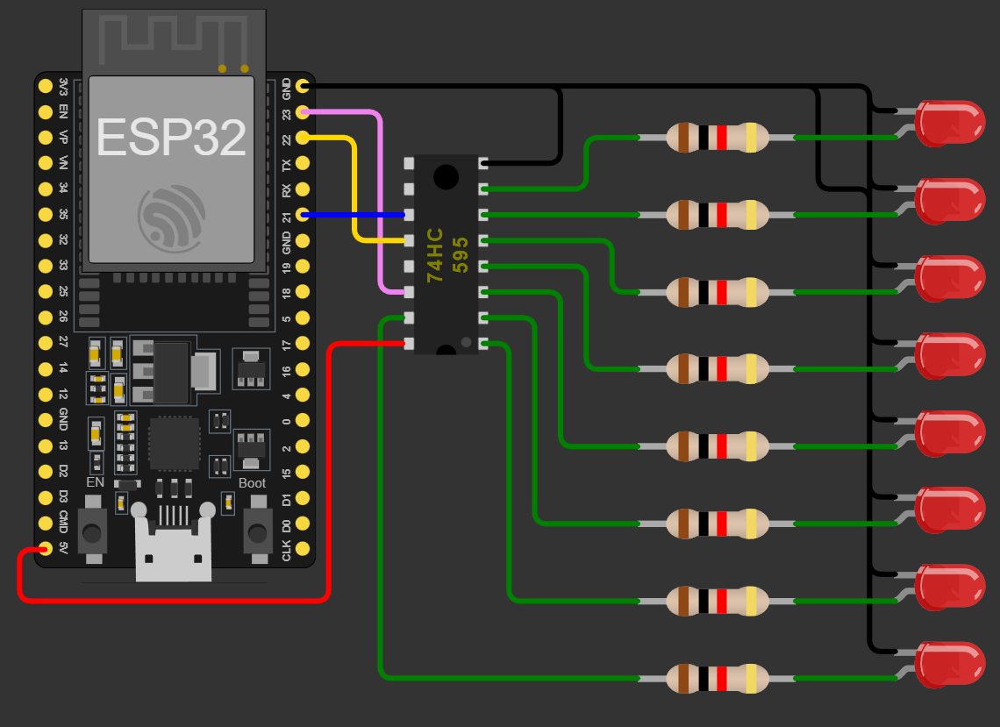
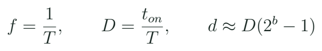

PWM, sonido y salidas digitales en serie
Distinguir frecuencia, resolución y ciclo de trabajo, y ampliar salidas con un registro de desplazamiento.
Una salida digital puede expresar más que encendido y apagado
PWM alterna una salida entre sus niveles digitales siguiendo un periodo y una fracción de tiempo activa. La señal conserva esos niveles; lo que cambia es su distribución temporal. Un LED y su circuito pueden producir una apariencia de brillo distinta al variar esa fracción. Un instrumento o una carga pueden responder de otra manera. No convertimos automáticamente el GPIO en una fuente analógica de potencia variable.

El piano muestra una señal cuyo ritmo determina la nota, mientras el dimmer muestra una señal cuyo ciclo de trabajo regula el efecto de brillo. Son usos diferentes de una onda digital. El registro 74HC595 del proyecto de luces ofrece otra ampliación: convierte una secuencia de bits en varias salidas conservadas. Esta clase compara las dos ideas sin confundir “muchas salidas” con “resolución de PWM”.
Periodo, frecuencia y resolución

Una señal de 1 kHz
Con periodo de 1 ms y tiempo activo de 0,25 ms, ¿qué ciclo de trabajo y qué código de 8 bits propones?
Ver razonamiento del caso
D = 0,25, equivalente al 25%. El código aproximado es 0,25 × 255 = 63,75: se elige 64. La frecuencia sigue siendo 1 kHz.
Tres controles diferentes
| Cambio | Qué modifica | Ejemplo |
|---|---|---|
| Frecuencia | Repetición por segundo | Nota en buzzer pasivo |
| Duty | Fracción activa | Brillo del LED |
| Resolución | Pasos de mando | 8 bits: 0 a 255 |
Más resolución permite seleccionar más códigos, pero el periférico debe generar la combinación de frecuencia y resolución solicitada. En el código de referencia se comprueba si la configuración tuvo éxito. Elegir una frecuencia nueva puede compartir recursos con otra salida, según la configuración del periférico y las bibliotecas. En la clase de servo volveremos a este punto con una señal de 50 Hz que tiene un significado distinto al brillo.
El 74HC595 y una palabra de ocho bits
El registro recibe bits en serie y mantiene un conjunto de salidas. DATA transporta el valor de cada bit; CLOCK determina cuándo se incorpora; LATCH presenta el conjunto almacenado. Un patrón como 00010000 puede representar una luz encendida entre ocho. Desplazar ese patrón produce la animación del proyecto. La operación shiftOut() genera una secuencia por software; no demuestra que el circuito esté usando automáticamente el periférico SPI del ESP32.
Señales del registro
| Señal | Papel | Qué observa el alumno |
|---|---|---|
| DATA | Bit que se transmite | 0 o 1 |
| CLOCK | Paso de desplazamiento | Ocho pulsos por palabra |
| LATCH | Actualización de salidas | Cambio del patrón completo |
La salida del integrado también tiene límites de corriente. En un montaje con LEDs se requiere una resistencia por rama. La alimentación del SN74HC595 y los umbrales de entrada se consultan juntos: un HC alimentado a 5 V no debe suponerse compatible en todas sus condiciones con una señal de 3,3 V. El ejemplo físico del curso se prepara a 3,3 V con corrientes de indicador pequeñas y una hoja de conexiones revisada.
Ocho indicadores
Con LED de 2,0 V y alimentación de 3,3 V, un resistor de 680 ohm produce aproximadamente 1,9 mA por rama en el modelo ideal. ¿Qué suma representan ocho ramas?
Ver razonamiento del caso
Aproximadamente 15,3 mA. También se revisan las condiciones por salida y del integrado completo; la suma de ramas no autoriza ignorar la caída de tensión del driver.
Un código y dos familias de API
Uso de la capa de compatibilidad incluida
CoursePwm led(23, 0);
bool ok = led.begin(1000, 8);
if (ok) {
uint32_t duty = (raw * 255UL) / 4095UL;
led.write(duty);
}La capa course_pwm.h conserva separados el número de GPIO y el canal. En Arduino-ESP32 2.x se configuran canal y asociación de pin; en 3.x cambió la API y varias operaciones se expresan por pin. El material fija un entorno de referencia para los ejemplos y explica esa diferencia. Encontrar una función con el mismo nombre no garantiza que sus argumentos conserven el significado de una versión anterior.
Patrón de una actualización del registro
digitalWrite(LATCH, LOW);
shiftOut(DATA, CLOCK, MSBFIRST, pattern);
digitalWrite(LATCH, HIGH);El orden de bits se relaciona con la posición física de las salidas. Si la animación parece invertida, primero compara el patrón, la convención MSBFIRST y las conexiones. No hace falta cambiar simultáneamente ocho cables y todo el programa para investigar una inversión. Una prueba de un solo bit permite identificar la correspondencia.
Laboratorio: un efecto y una secuencia
- Ejecuta c05_pwm con LED y resistencia; reconoce pin, canal, frecuencia y resolución.
- Selecciona códigos 0, 64, 128, 192 y 255. Predice sus fracciones de mando.
- Si hay analizador lógico u osciloscopio, mide periodo y tiempo activo; conserva la configuración.
- En el proyecto 4, prueba un bit cada vez y dibuja su relación con las salidas.
- Compara cambiar frecuencia del buzzer con cambiar duty del LED.
- Conserva una tabla que diferencie mando calculado, señal observada y efecto visible.
Mando del ejercicio
| Código / 8 bits | Fracción aproximada | Observación |
|---|---|---|
| 64 | 25,1% | Por comprobar |
| 128 | 50,2% | Por comprobar |
| 192 | 75,3% | Por comprobar |
La vista de una simulación ayuda a relacionar el algoritmo con el patrón. Una estimación visual de brillo no es una medida lineal de potencia óptica. Si el equipo usa solo observación, puede describir orden y contraste entre estados. Para afirmar valores de señal necesita el instrumento o el modelo identificado. El docente demuestra al menos una lectura de periodo para ligar la fórmula con un objeto real.
Cómo se transfiere la idea a un UAV
En una aeronave conviven interfaces digitales con significados distintos. Una orden hacia un servo, un controlador de motor y una cadena de LEDs no se interpreta del mismo modo. Compartir el término PWM no hace intercambiables sus frecuencias, anchos de pulso ni etapas de potencia. El aprendizaje del curso es leer qué espera el dispositivo receptor y comprobar la señal generada antes de integrarlo. No se usa el pin como sustituto de un ESC.
Qué veremos después
| Dispositivo | Dato relevante | Comprobación |
|---|---|---|
| LED | Duty del efecto | Periodo y estado |
| Servo | Ancho de pulso | Intervalo permitido |
| Driver DC | Entrada de mando | Potencia y respuesta |
Investiga en la hoja del SN74HC595 la diferencia entre registro de desplazamiento y registro de salida. Busca además sus condiciones de alimentación y de corriente. Compara la comunicación DATA/CLOCK/LATCH con un bus SPI de propósito general: ambos son síncronos, pero la función del dispositivo y el protocolo concreto siguen importando. Presenta una semejanza y una diferencia útiles para cablear.
Práctica guiada
- Mostrar una onda digital antes de hablar de brillo o velocidad.
- Resolver periodo y duty con unidades.
- Comprobar c05_pwm y una palabra del registro 74HC595.
- Contrastar LED, buzzer y futuro servo como interfaces diferentes.
Preguntas de cierre
¿50% de duty equivale a 1,65 V constantes en el pin?
No: el pin alterna niveles; una magnitud media depende del circuito y de la medida.
¿Pin y canal son lo mismo?
No. La API y la capa de compatibilidad deben conservar la correspondencia.
¿shiftOut() prueba uso del SPI de hardware?
No; genera una secuencia por software para la función definida.
Entrega
Tabla de señales PWM y correspondencia de bits del proyecto 4.
Proyectos MECRO relacionados
- 02. Piano Electrónico · Núcleo. Funciones, entradas y PWM Abrir referencia Wokwi
- 04. Auto Fantástico (74HC595) · Núcleo. Expansión de salidas con 74HC595 Abrir referencia Wokwi
Fuentes para ampliar
[MECRO] MECRO. Laboratorio Electrónica con ESP32: veinte proyectos.
[PWM] Espressif Systems. Arduino-ESP32: LEDC.
[MIG] Espressif Systems. Migración Arduino-ESP32 2.x a 3.0.
[HC595] Texas Instruments. SN74HC595: hoja de datos.